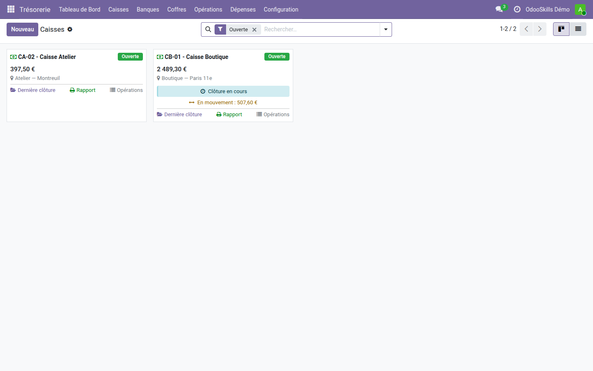
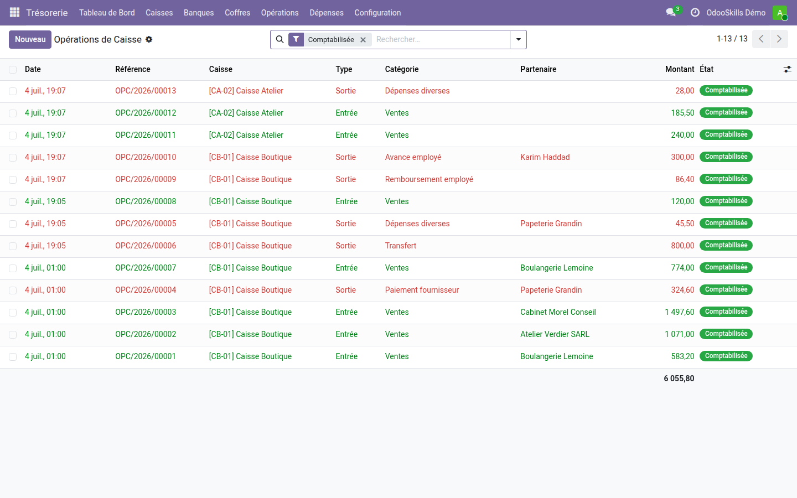
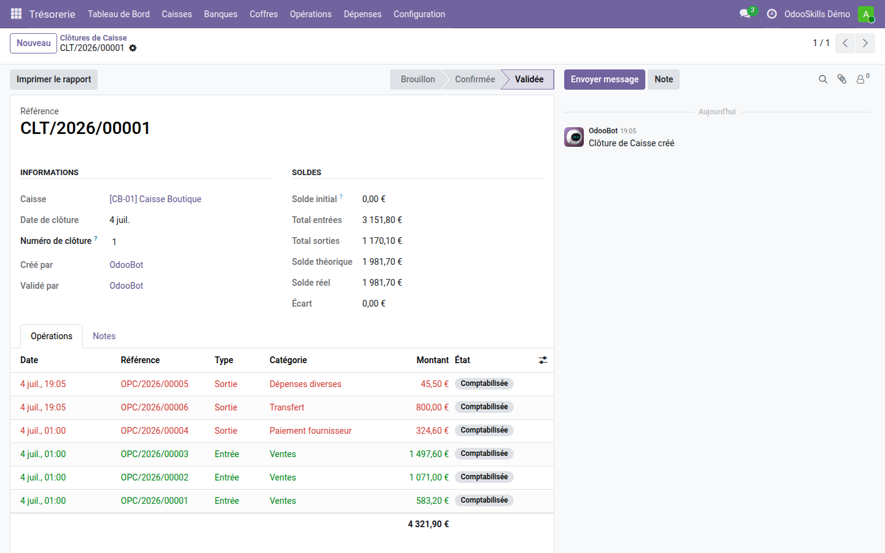
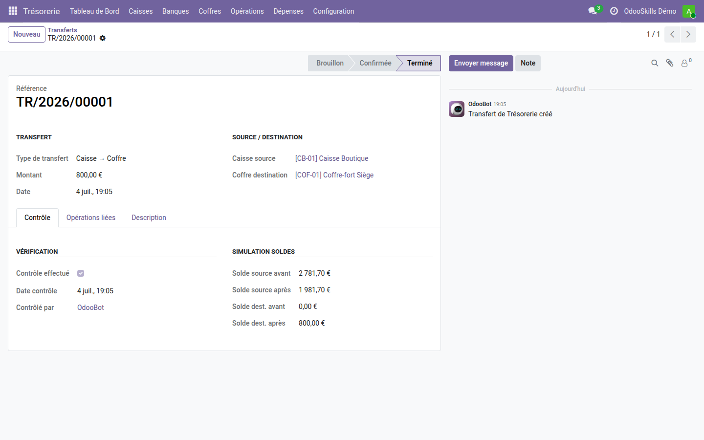

Trésorerie — Caisses & Coffres
Chaque euro qui entre ou sort de vos caisses est tracé, clôturé et justifié — sans Excel, sans carnet.
La caisse est le point aveugle de la comptabilité : les paiements en espèces s'enregistrent
dans Odoo, mais personne ne sait combien il y a réellement dans le tiroir, qui a fait
la dernière sortie, ni pourquoi il manque 20 € à la fin de la semaine. Le contrôle se fait
sur un cahier ou un tableur — jamais rapproché, jamais verrouillé.
Ce que ça apporte
- 💶 Caisses avec solde en temps réel — chaque paiement Odoo enregistré sur un journal espèces crée automatiquement l'opération de caisse miroir.
- 🔗 Clôtures chaînées — chaque clôture repart du solde validé de la précédente : écart affiché, verrouillage une fois validée, rapport PDF signable.
- 🔒 Coffres-forts — responsables désignés, historique d'opérations propre, solde séparé des caisses.
- 🔁 Transferts contrôlés — caisse ↔ caisse, caisse ↔ coffre, avec simulation des soldes avant/après et contrôle à 3 niveaux (blocage, avertissement, libre).
- 🧾 Catégories d'opérations configurables — ventes, frais, transferts… chacune reliée à son écriture comptable.
- 👥 Utilisateurs autorisés par caisse — un caissier ne voit que ses caisses ; menus masqués pour les autres utilisateurs.
En images
1. Vos caisses en un coup d'œil
Solde courant, clôture en cours et montant « en mouvement » sur chaque carte.

2. Toutes les opérations, entrées et sorties
Paiements clients, paiements fournisseurs, bons de caisse et transferts — catégorisés et comptabilisés.

3. La clôture qui verrouille la journée
Solde théorique calculé, solde réel saisi, écart mis en évidence — puis validation et verrouillage.

4. Le transfert qui simule avant d'exécuter
Dépôt au coffre en fin de journée : soldes source et destination affichés avant/après, vérification tracée.

Pourquoi l'adopter
- La gestion physique des espèces n'existe pas dans Odoo standard — même en Enterprise. Ce module la fournit, gratuitement.
- Fini les écarts découverts des semaines plus tard : la clôture chaînée les montre le jour même.
- Un paiement rattaché à une clôture validée ne peut plus être annulé ni remis en brouillon — l'historique de caisse est fiable.
Cœur de la suite Trésorerie OdooSkills
Étendez-le avec Banques (comptes manuels + rapprochement), Comptage (billets & pièces), Dépenses (avances employés), Tableau de bord et Clôture+. Pack complet à prix réduit sur apps.odooskills.com.
Licence LGPL-3 — compatible Odoo 19.0 Community & Enterprise. Support : support@odooskills.com.